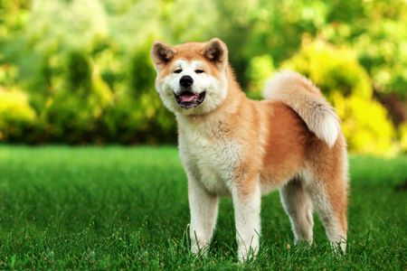

The Akita is a large and powerful dog breed with a noble and intimidating presence. They are the closest relative to a Shiba---almost like a sibling. They were originally used for guarding royalty and nobility in feudal Japan. These dogs are large and powerful, and in Japan culture, represents good fortune. They can be up to twice the size of a Shiba, and weight more than 3 times its small relative. Akitas were found a thousand of year ago, and were used as companion and hunting dogs since. They are especially loyal to their owners, and can be fierce and vicious with preys.
These other breeds are not as close to the origins of a Shiba, but are still quite popular in Japan. Because of their appearance, they may be mistaken for a Shiba
© ErinZhang2019